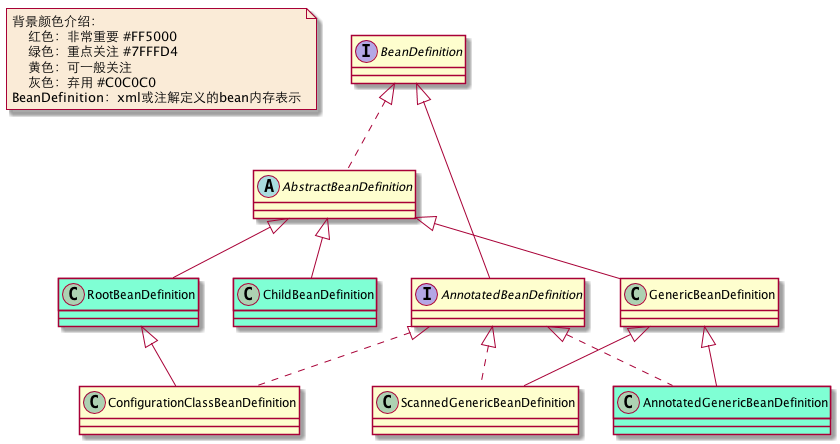
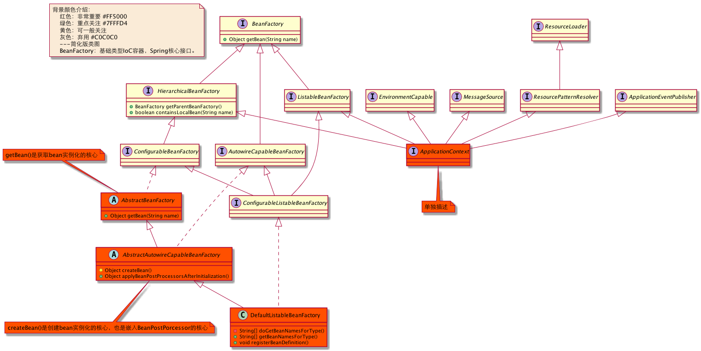
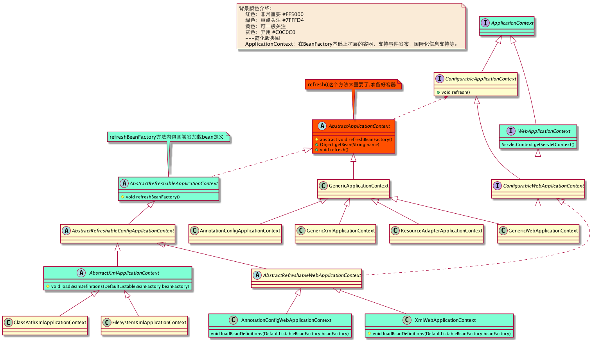
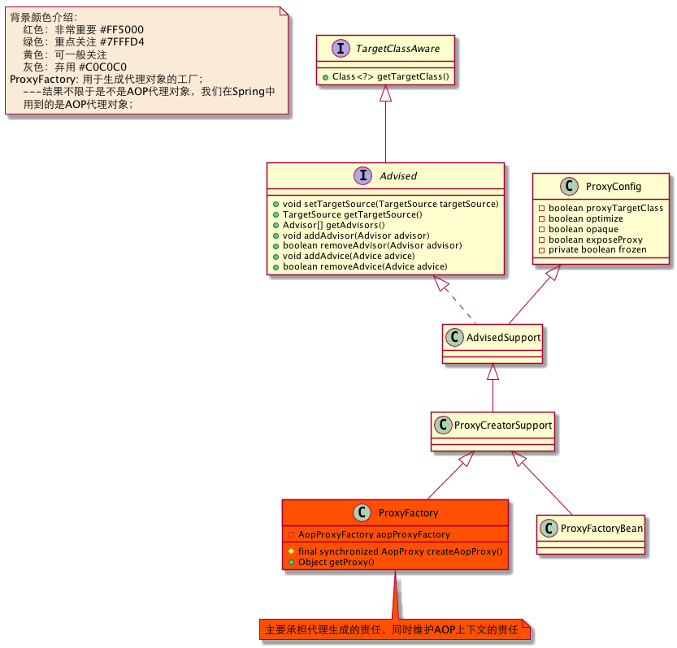
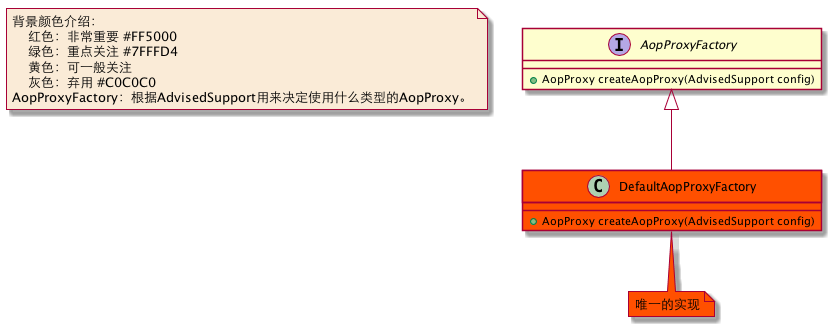
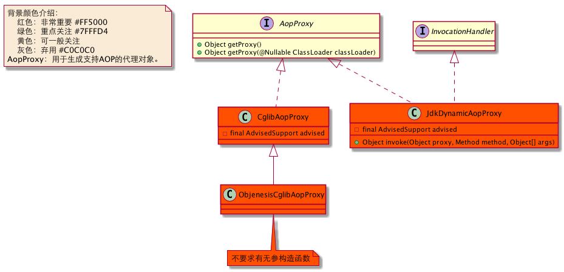
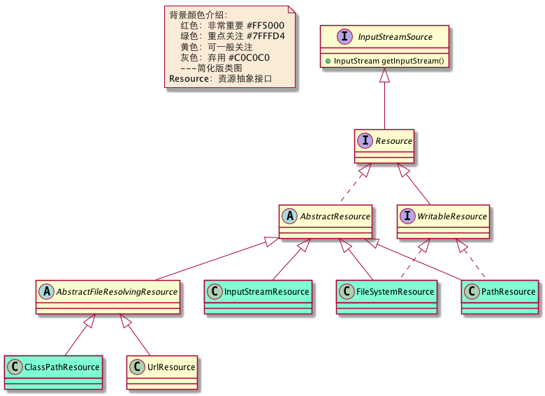
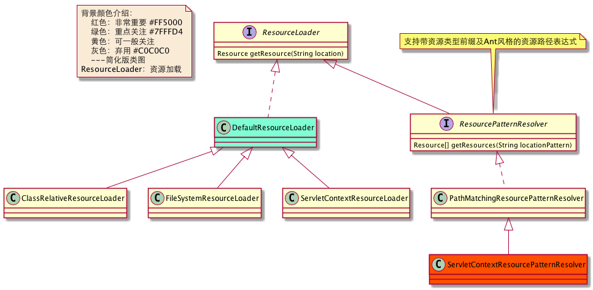
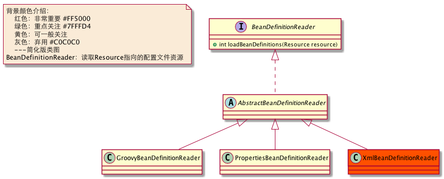
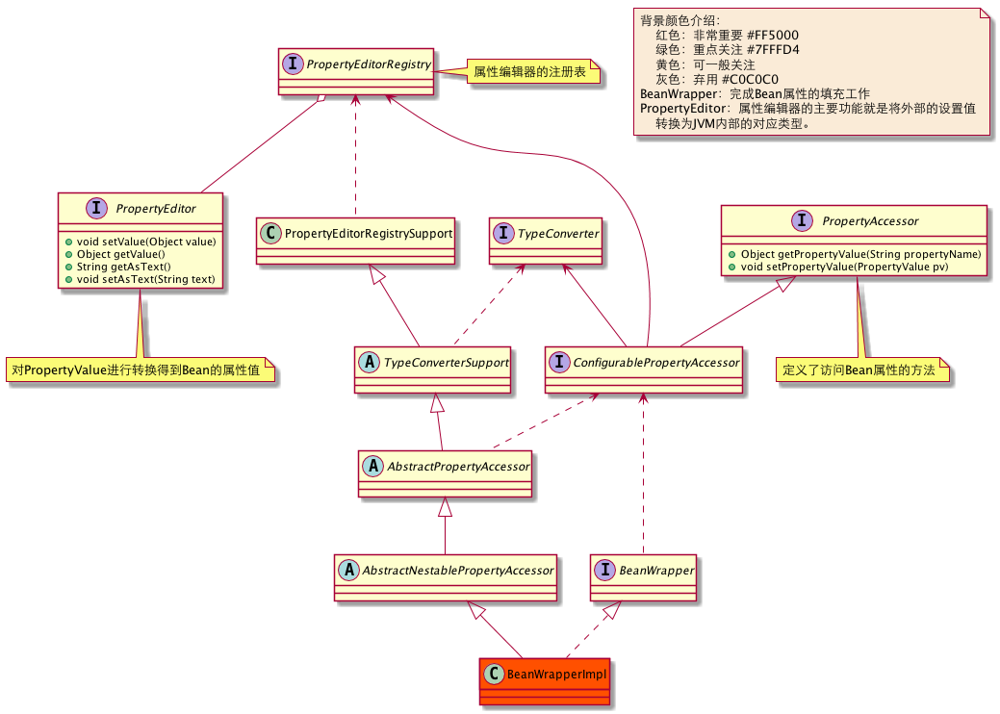

Spring-IoC基础设施介绍
在看Spring IoC容器启动之前我们先看下，它有哪些核心组件，这些核心组件是其构建的基础。
一.核心组件
1.BeanDefinition
BeanDefinition：xml或注解定义的bean内存表示。
{kind=link}

2.BeanFactory
BeanFactory是获取Bean的顶层接口，Spring核心接口之一。可以分为以下两类：
2.2基础类型BeanFactory
基础类型BeanFactory：在Bean定义与实例化发挥重要作用。
{kind=link}

2.2ApplicationContext
ApplicationContext：在BeanFactory基础上扩展的容器，支持事件发布，国际化信息支持等。
查看大图
{kind=link}

3.BeanFactoryPostProcessor
BeanFactoryPostProcessor：可以让我们在容器实例化相应对象之前，对注册到容器的BeanDefinition所保存的信息做相应的修改，仅在应用上下文初始化时调用一次。比如修改其中bean定义的某些属性，为bean定义增加其他信息等。

4. BeanPostProcessor
BeanPostProcessor：可以对Bean实例生成进行干预，比如Spring AOP就是以此为桥梁实现的。在相应章节会列出其具体子类，下图是主要的类结构。

二.AOP套件
由于Spring是在实例化Bean的时候生成动态代理对象，而动态代理的目的是为了AOP的实现。在这里提前接触下AOP为Bean动态代理准备的组件，也能够让人对IoC和AOP的认识不产生割裂。如果大家认为不合理就暂时搁置争议吧。
1.ProxyFactory
ProxyFactory: 用于生成代理对象的工厂。
{kind=link}
)
2.AopProxyFactory
AopProxyFactory根据上下文信息来决定使用什么类型的AopProxy。
{kind=link}

3.AopProxy
AopProxy：用于生成支持AOP的代理对象。
{kind=link}

三.其他组件支持
1.Resource
Resource：资源抽象接口。
{kind=link}

2. ResourceLoader
ResourceLoader：用于资源加载。
{kind=link}

3.BeanDefinitionReader
BeanDefinitionReader：读取Resource指向的配置文件资源。
{kind=link}

4.BeanWrapper
BeanWrapper：完成Bean属性的填充工作
{kind=link}

了解完Spring的主要组件，我们接下来看看Spring容器启动是怎么回事，看看里面都干了些什么。
附录：
{kind=link}
快速导航：